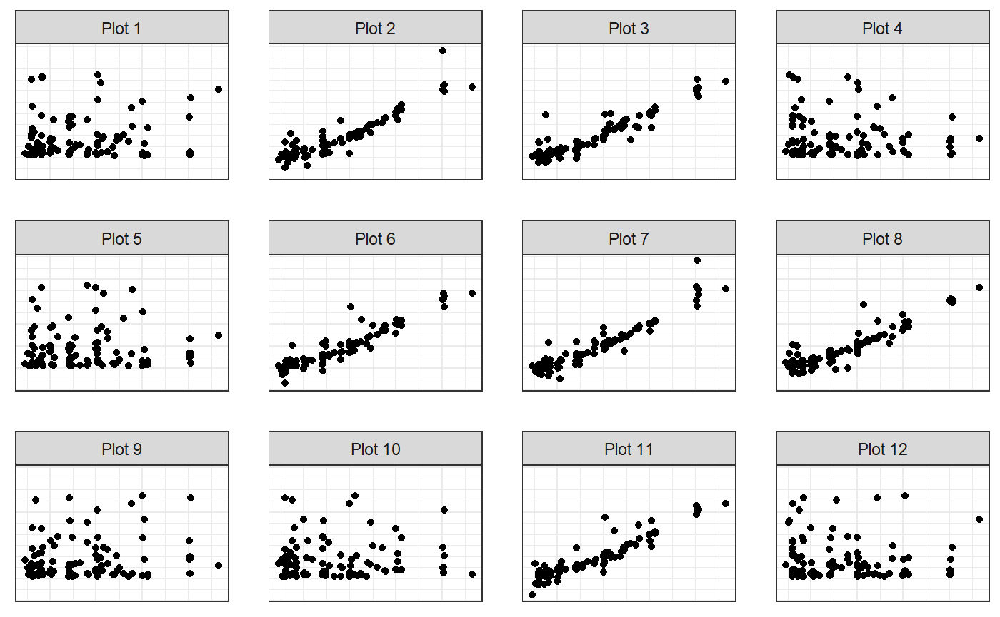

The goal of teaTasteR is to take a dataset and create a “Lady Tasting Tea” lineup plot for doing individual visual inference.
And the development version from GitHub with:
In the following example we will demonstrate LTT lineups for testing for independence between carat weight and price from the ggplot2 diamonds data
library(teaTasteR)
## basic example code
set.seed(12345)
small_diamonds <- ggplot2::diamonds[sample(1:nrow(ggplot2::diamonds),100),]
head(small_diamonds)
#> # A tibble: 6 x 10
#> carat cut color clarity depth table price x y z
#> <dbl> <ord> <ord> <ord> <dbl> <dbl> <int> <dbl> <dbl> <dbl>
#> 1 0.4 Ideal D VS2 61.6 57 1050 4.77 4.71 2.92
#> 2 0.55 Ideal G VS1 60.9 55 1841 5.27 5.31 3.22
#> 3 0.31 Ideal E IF 60.4 56 1188 4.43 4.38 2.66
#> 4 0.71 Ideal J VS2 62.4 54 1899 5.72 5.76 3.58
#> 5 1.51 Premium G VS1 62.4 60 12948 7.34 7.3 4.57
#> 6 1.05 Ideal H SI2 61.9 56 4504 6.49 6.56 4.04We will feed it through the make_lineup_dat() function to prepare the data for plotting
diamonds_lineup_dat <- make_lineup_dat(M=6, dat=small_diamonds,
xname="carat", yname="price")
head(diamonds_lineup_dat)
#> x permy type order
#> 1 0.40 827 null 1
#> 2 0.55 2012 null 1
#> 3 0.31 895 null 1
#> 4 0.71 646 null 1
#> 5 1.51 1031 null 1
#> 6 1.05 16900 null 1Then put into lineup plot.
